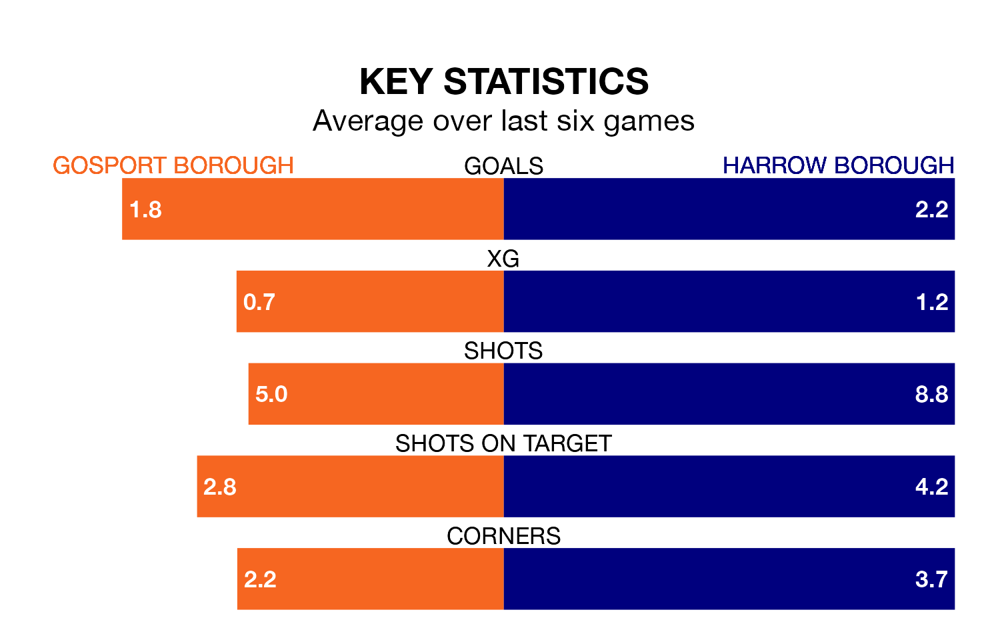

Struggling Harrow Borough face Gosport Borough away at Privett Park on Saturday looking to build on a win in their last league outing.
After securing all three points with a 3-1 victory over Sholing on March 9, Harrow sit 21st in the Southern League Premier South.
They travel to play a Gosport side third in the standings, who also won their last match, 3-0 against Hayes and Yeading United.
With 44 goals in 33 games so far this season, Harrow are scoring at below the league average rate with 1.3 goals per game. And they are conceding more than average, letting in 72 goals at a rate of 2.2 per game.
Gosport, meanwhile, are above average scorers, with 1.8 goals per game, compared to a league average of 1.7. They have conceded 1.0 goal per game.
In the last 10 years, Gosport and Harrow have played each other on eight occasions. Gosport won three of them, Harrow four, and they drew once.
On average, Gosport scored 1.1 goals and Harrow 1.2 in those matches.
Their last meeting was on February 6, when Harrow won 2-0 at home.
Gosport Borough are in mixed form in the Southern League Premier South, with three wins and a draw from their last six games.
With three wins and two draws over that period, Harrow Borough's form is slightly better – they have taken 11 points from 18, compared to the home side's 10.
Updated: 15:10 (UTC), 15/03/24